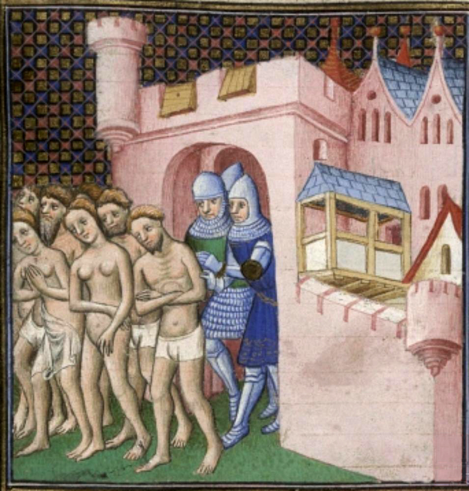

Entre le Xe et XIIe siècle, une mystérieuse « hérésie » fait son apparition dans le Midi de la France. Bientôt son expansion et sa menace sont telles que l’Eglise catholique est contrainte de mener une guerre à l’éradication de cette religion. Deux croisades seront menées par le royaume de France, il s’agit surtout pour le roi de France de dominer tout le Languedoc et l’Aquitaine. La lutte contre les cathares s’achèvera par la chute de la forteresse de Montségur en 1244.
Au XIIe siècle, le sud-ouest de la France est une région bien différente de celle du nord de la Loire. On y parle une langue distincte (langue d’oc et non d’oïl) et une civilisation brillante et raffinée s’y épanouit. Se déplaçant de château en château, les troubadours, poètes et musiciens, chantent l’amour, mais aussi l’honneur et la négation du droit du plus fort. Ces idées et ces valeurs sont très présentes dans une région où les gens cultivés, surtout dans les villes, ont gardé vivants les souvenirs de la civilisation romaine. Des règles, des lois et des codes limitent le pouvoir des grands et régissent les rapports qui les unissent à leurs vassaux et à leurs sujets. Tandis qu’en Île de France, le roi se bat à cheval et s’impose de diverses manières à ses vassaux récalcitrants, dans les villes du Midi languedocien et aquitain, les habitants élisent des consuls ou des capitouls qui gouvernent et parlent d’égal à égal avec les seigneurs dont ils dépendent. Plus libres, les villes du Midi sont aussi les plus accueillantes aux idées étrangères : leur importante activité commerciale (Toulouse est la troisième ville d’Europe) les met en relation avec de nombreux pays. Les commerçants qui y échangent des denrées et des biens, y puisent des idées qu’ils propagent ensuite vers l’Occitanie.
Les habitants de Carcassonne expulsés de la ville après le siège
C’est dans ce milieu que se répandit une religion nouvelle dont le succès fut si rapide qu’il effraya l’Église catholique. Cette dernière fut en partie responsable de cet extraordinaire essor : critiquée de toutes parts et incapable de se réformer, elle prépara le terrain sur lequel le catharisme put s’enraciner. Bien avant l’apparition de la religion cathare, de nombreux moines avaient prêché la révolte ouverte contre l’Église, ses prêtres et ses sacrements : l’exigence entre une plus grande simplicité dans la relation des hommes avec Dieu, d’un retour à une foi moins prisonnière du cadre luxueux dans lequel l’avait enfermée l’Église, étaient des revendications très largement répandues à l’époque. Mais le catharisme était bien plus qu’un mouvement de simple critique; il était aussi et surtout une religion différente du catholicisme romain. La tradition qui le nourrissait était très ancienne puisqu’elle s’était développée à partir du VIIe siècle avant J.-C., autour d’un personnage important de l’Antiquité, le prophète perse Zoroastre. Ce dernier pensait qu’il existait dans l’univers deux principes irréductibles, le Bien et le Mal, en lutte permanente l’un contre l’autre. Les idées de Zoroastre eurent une influence considérable pendant toute l’Antiquité et elles furent, dans leurs grandes lignes, reprises au IIIe siècle après J.-C. par le prophète Manès, fondateur de la doctrine manichéenne. Au Xe siècle, en Bulgarie, cette doctrine donna naissance aux bogomiles (De Bogomile, le fondateur de la secte), qui avaient repris les idées religieuses des conceptions manichéennes. Par la suite, on a souvent établi un lien de filiation entre le catharisme et le bogomilisme, cependant, ce lien est aujourd’hui contesté. Si ces deux doctrines sont très proches, il semble que le catharisme soit directement issu du christianisme et des doctrines marcionistes (de Marcion) et gnostiques. Le catharisme est en effet le fruit d’un travail scripturaire, proposant une interprétation différente des évangiles, rejetant notamment tous les sacrements de l’Église catholique (baptême d’eau, eucharistie, mariage, etc.).
La religion cathare tire son nom du terme grec catharos, qui signifie pur, car elle donne comme but à l’homme d’atteindre la pureté parfaite de l’âme. Pendant la durée de sa vie terrestre, considérée comme une épreuve, l’Homme doit s’efforcer, par une conduite appropriée, de rompre avec la matière, le monde physique et les besoins grossiers. Pour les cathares, qu’on appelle aussi albigeois (de la région d’Albi), tout cela représente le Mal auquel est opposé le Bien, c’est-à-dire l’âme purifiée, ignorant les désirs du corps. Ceux qui parviennent à purifier leur âme se reposent à jamais dans le Bien après la mort. Les autres doivent se réincarner indéfiniment. Pour les cathares, la mort n’était pas redoutée car elle pouvait signifier la délivrance. Ce mépris de la mort leur donna l’énergie nécessaire pour combattre le roi de France et le pape. Dès 1147, des moines furent envoyés pour redonner la raison aux albigeois, mais tous échouèrent. La dernière tentative fut celle de saint Dominique (fondateur de l’ordre des Dominicains), mais il n’obtint qu’un succès limité. Le pape en vint progressivement à penser qu’il fallait mener contre eux une guerre sainte. La rupture entre cathares et catholiques fut totale en 1208 lorsque le légat du pape fut assassiné.
Les cathares et ceux qu’on appelait « Parfaits » ou « Bonshommes », qui jouaient en quelque sorte le rôle de prêtres, devaient observer des règles très strictes. Ils étaient astreints à jeûner fréquemment, et une série d’aliments leur étaient défendus en temps ordinaire. Ils ne construisaient pas de temples, ils priaient et prêchaient n’importe où, chaque fois que la possibilité s’en offrait. Ils rejetaient tous les sacrements à l’exception du Consolamentum. Elle concernait les croyants désireux de devenir Parfaits (sorte de baptême). Le croyant s’engageait à respecter les règles propres aux Parfaits : ne plus mentir, ni jurer, ne plus avoir de relations sexuelles, régime alimentaire très strict… Recevant l’accolade de ses initiateurs, qui s’agenouillaient ensuite devant lui, le nouveau Parfait était censé sentir descendre sur lui l’Esprit saint. Tant qu’ils purent afficher librement leurs opinions, les cathares s’habillaient de préférence en noir. Après la répression, ils se contentaient de dissimuler une ceinture noire sous leurs vêtements ordinaires.
L’Agitateur du Languedoc, Jean-Paul Laurens, Huile sur toile, 1887
L’assassinat de son légat amena le pape à lever une croisade contre les hérétiques. Le roi de France, Philippe Auguste, répondit à l’appel et laissa ses plus puissants vassaux, le duc de Bourgogne, les comtes de Montfort et de Saint-Pol prendre la tête de l’armée. Ce sont 300 000 croisés qui descendirent dans la vallée du Rhône. Le comte de Toulouse, Raymond VI, soupçonné d’avoir encouragé le meurtre du légat, s’était rallié à l’Église et s’était croisé contre ses propres sujets. L’armée des croisés mit le siège sur la ville de Béziers, une ville solidement fortifiée. Cependant les habitants, forts de ce sentiment de sécurité, assaillirent les campements qui se tenaient aux pieds des murailles. Les ribauds (mercenaires et chevaliers recrutés pour l’expédition) profitèrent que les portes des remparts étaient ouvertes pour se frayer un chemin à l’intérieur de la cité et pour y faire pénétrer ensuite une partie de l’armée. Aux soldats qui se demandaient comment faire pour distinguer, dans la population, ceux qui étaient hérétiques de ceux qui étaient fidèles, l’abbé de Cîteaux, Arnaud Amaury, répondit par cette phrase terrible : « Tuez-les tous, Dieu reconnaîtra les siens! » La mise à feu du Languedoc commença : la ville fut incendiée et ses habitants, massacrés. Après Béziers, ce fut le tour de Carcassonne où l’armée s’annonça à la fin du mois de juillet 1209. L’âme de la résistance de la ville fut le jeune vicomte Roger de Trencavel. Le siège dura trois semaines, les assiégeants avaient privé la ville d’eau, obligeant les assiégés à parlementer. Trencavel qui était venu parlementer fut fait prisonnier par les croisés, rompant ainsi le code d’honneur de la chevalerie. Simon de Montfort, un chevalier croisé dont le courage avait été remarqué, fut choisi pour succéder aux biens de Trencavel. Cependant, ses sujets lui étaient naturellement hostiles. Aussi, jusqu’à sa mort, en 1218, il fut constamment en guerre contre ses sujets récalcitrants.
A l’issue de ces sièges longs et éprouvants, les croisés victorieux offraient la vie sauve aux hérétiques acceptant de renier leur foi, mais ils étaient bien peu nombreux. Par le fer, le feu et le sang, la croisade continuait, mais l’enjeu devenait chaque jour plus clair, il s’agissait pour les seigneurs du Nord de maîtriser le Midi. Le comte de Toulouse et le roi d’Aragon finirent par s’en inquiéter et, en 1213, ils unirent leurs forces pour attaquer Simon de Montfort au château de Muret. L’assaut tourna court malgré l’avantage numérique, Pierre d’Aragon fut tué, et Raymond VI dut se replier dans sa ville de Toulouse qui fut par la suite investie par l’armée de Simon de Montfort. Mais le peuple gardait une fidélité profonde et préférait aller au bûcher en chantant plutôt que de renier sa foi. Lorsque Raymond VI et son fils Raymond VII revinrent d’Angleterre où ils s’étaient réfugiés, ils furent accueillis avec beaucoup d’enthousiasme. Une émeute populaire avait chassé les chevaliers français de la ville de Toulouse. A cette nouvelle, Montfort accourut aussitôt pour mettre le siège dans la ville, c’est là qu’il fut tué en 1218. Sa mort fut accueillie par des cris de joie : les cathares voyaient disparaître le plus cruel de leurs ennemis.
Chef de la croisade contre les albigeois, il mena cette guerre avec courage et cruauté. Il s’était déjà illustré pour sa bravoure au cours de la quatrième croisade. Il représente le « puritanisme du nord ». Il est le parfait opposé de son ennemi, le comte Raymond VI de Toulouse, symbole du « méridional libertin ». Ils sont le modèle du choc des deux cultures en présence.
Simon IV de Monfort, illustration de 1835 • WIKIMEDIACOMMONS
En 1224, de nouvelles menaces se précisèrent sur le pays occitan. Le nouveau roi Louis VIII va se montrer plus implacable encore que son père Philippe Auguste. En 1226, alors que les seigneurs et comtes du Midi se voyaient réinstallés sur leurs terres, une seconde armée croisée allait déferler sur le Languedoc, avec le roi de France en personne à sa tête. La plupart des villes s’effondrèrent ou se soumirent assez facilement. Seul Avignon opposa une âpre résistance de trois mois. La mort de Louis VIII sauva Toulouse d’un nouveau siège, mais les redditions successives de ses vassaux finirent par convaincre Raymond VII qu’il valait mieux capituler. Par le traité de Meaux, signé en 1229, le comte de Toulouse s’engagea à demeurer fidèle au roi et à l’Eglise catholique, à mener une guerre intraitable contre les hérétiques et à marier sa fille unique au frère du nouveau roi de France, Louis IX, afin de préparer le rattachement du Languedoc à la France. Après la signature du traité et le retour de Raymond VII à Toulouse, le tribunal d’Inquisition fut créé et confié à une poignée de Dominicains. Jouissant d’un pouvoir sans limites, les inquisiteurs sillonnèrent le Midi pour débusquer les hérétiques. Mais ces mesures ne suffirent pas à étouffer l’aspiration du Midi à croire et à gouverner comme il l’entendait. Une seconde révolte secoua la région après l’assassinat, en 1242, des juges du tribunal de l’Inquisition par des chevaliers cathares.
La bataille de Muret, le 12 septembre 1213 fut un tournant dans la lutte pour le Midi occitan, à l’avantage de l’armée royale.
La bataille de Muret d'après une enluminure du XIVe siècle
Une paix définitive fut signée à Lorris en 1243 entre le roi de France et le comte de Toulouse. C’était la fin de l’Occitanie indépendante et surtout du catharisme. Pour leur porter le coup de grâce, il fallut cependant prendre la forteresse de Montségur, symbole du refus de l’autorité royale, où s’était réfugiés 400 croyants de la religion cathare. La position de la forteresse (un pic dominant de plus de cent mètres des terres voisines) donnait un sentiment de confiance immense aux assiégés. Durant une année, ils défièrent avec succès l’autorité du roi et du pape. Les 10 000 soldats engagés dans le siège ne pouvaient que constater l’inefficacité des boulets que catapultaient les pierrières contre les remparts. Cependant, une nuit de juillet 1244, grâce au renfort d’un groupe de montagnards habitués à l’escalade et connaissant parfaitement les lieux, les assiégeants réussirent à pénétrer dans la place par surprise et parvinrent à obtenir sa capitulation complète. Ne disposant plus d’aucun refuge sûr, pourchassés par les inquisiteurs, les derniers cathares vécurent comme des bêtes traquées, suscitant parfois de brèves révoltes. Les Parfaits survivants émigrèrent en Catalogne, en Sicile et en Lombardie. Ainsi disparaissait la culture la plus raffinée de l’époque : la civilisation occitane issue du mythe de la chevalerie, de l’honneur chevaleresque et de l’amour-courtois, honorée par les troubadours.
Montségur n’était pas un château comme les autres. Les architectes qui le construisirent eurent le souci d’édifier une bâtisse aisément défendable. Mais ils eurent également la volonté de construire un véritable temple de la religion cathare. Ainsi, l’orientation de l’édifice n’était pas simplement due au hasard : ses principaux axes se situaient dans l’alignement des points qui signalaient à l’horizon les endroits où se lève et se couche le Soleil à certaines époques de l’année (équinoxes et solstices). Le Soleil tenait un rôle important en tant que symbole de la Lumière et du Bien dans la religion cathare. Montségur est devenu aujourd’hui un symbole de la renaissance occitane.
Photo aerienne du château de Montségur
Après la chute de Montségur, de nombreux cathares émigrèrent en Italie. C’est là qu’ils ont sans doute transféré leur trésor. Il s’agit peut être du vieux trésor wisigoth d’Alaric, caché dans les environs de Carcassonne. Cependant, au début du XXe siècle, près de Rennes-le-Château, l’abbé Béranger Saunière fait des dépenses exubérantes sans que l’on sache d’où venait sa fortune. Une chose est sûre, ce curé a trouvé un trésor. Pourrait-il s’agir du trésor des cathares ? N’oublions pas que lors du siège de Montségur, une poignée d’assiégés s’enfuirent du château pour une destination mystérieuse.